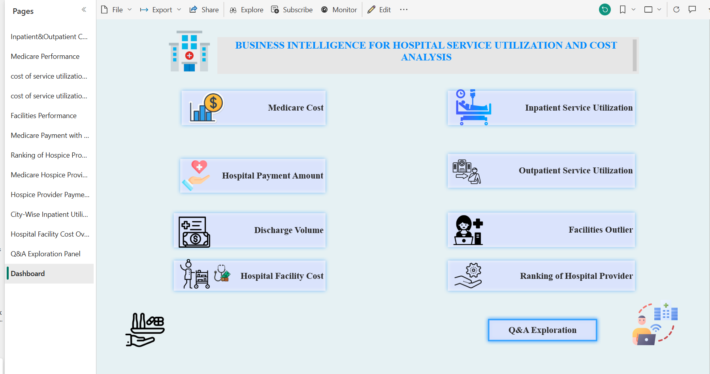
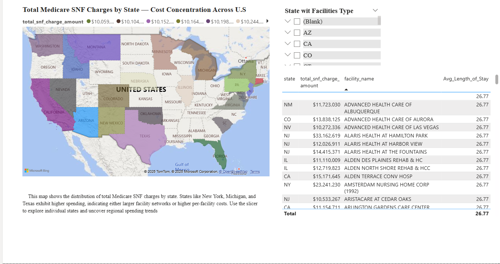

Hospital Service Utilization & Cost Analysis
Built Power BI dashboards integrated with SQL to analyze healthcare
costs and patient flow. Provided actionable insights on service utilization
and resource allocation for hospital management.


Highlights
- Source:Hospital Service Utilization Dashboard
- 📊 Power BI dashboards with SQL integration
- 💰 Analyzed healthcare costs and patient data
- 📉 Identified cost-saving opportunities in diagnostics
- 🏥 Improved hospital resource allocation strategies
← Back to Portfolio